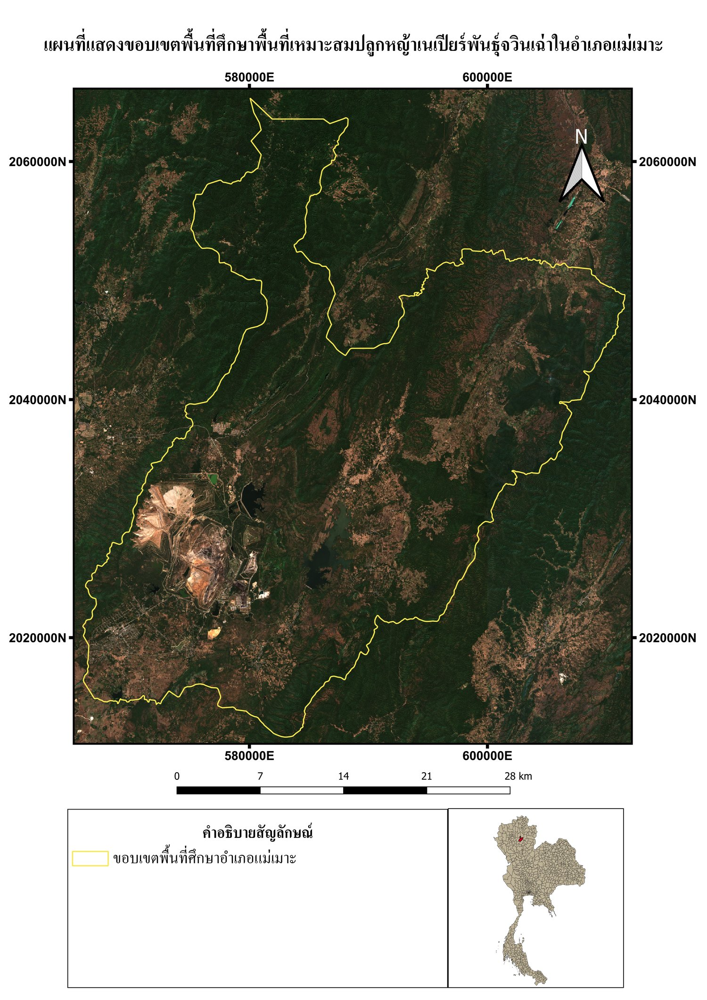
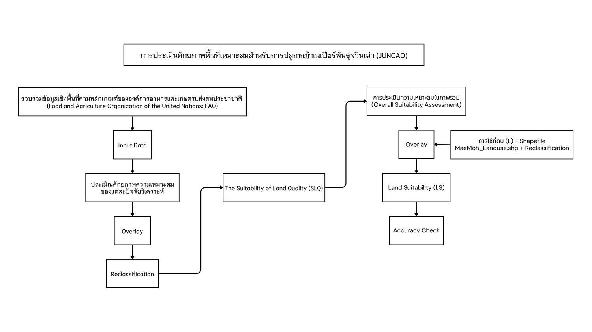
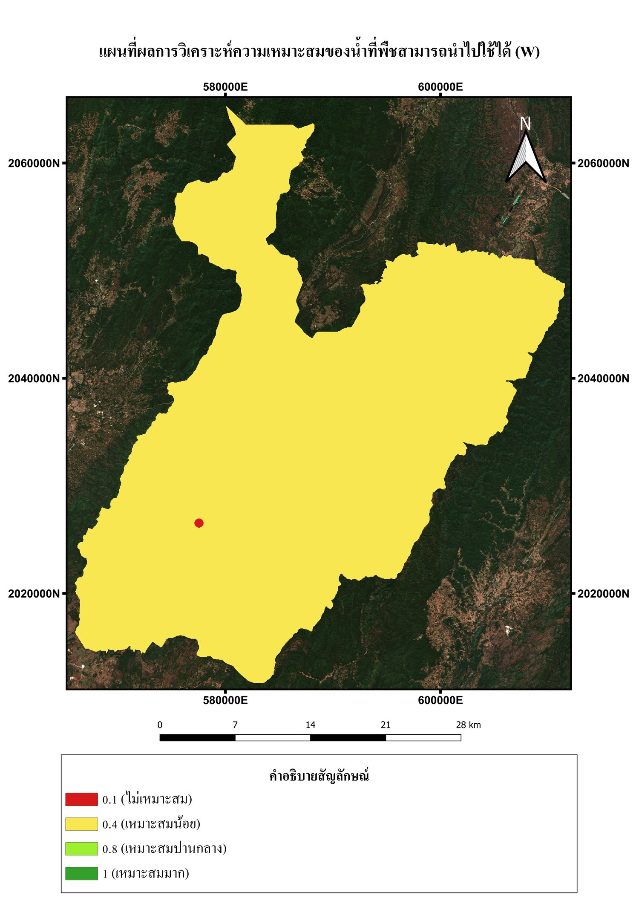
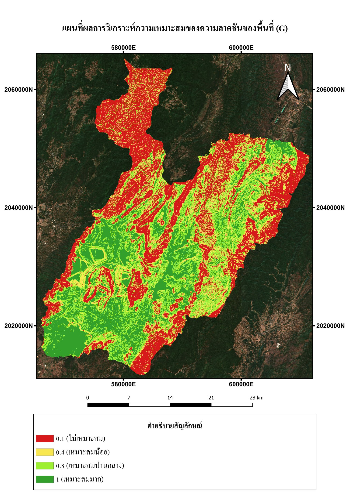
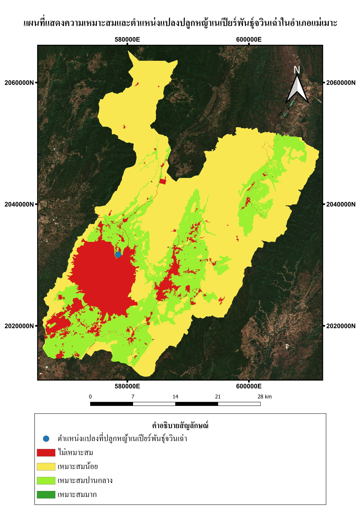
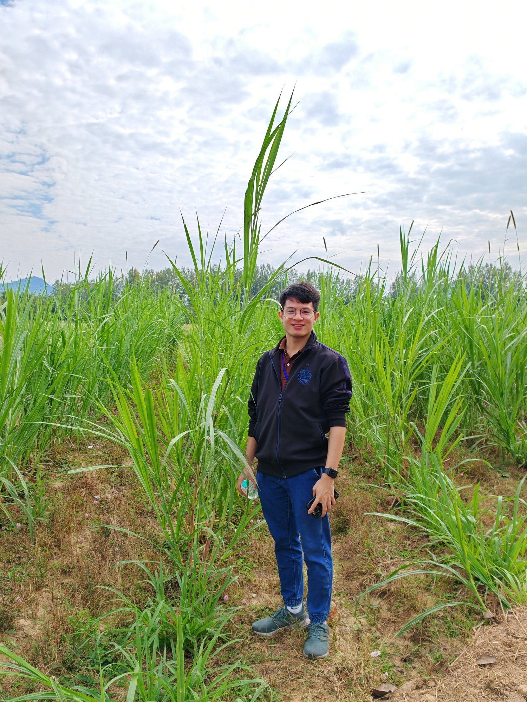

ประเมินศักยภาพพื้นที่เหมาะสมสำหรับปลูกหญ้าเนเปียร์พันธุ์จูวินเฉ่า (JUNCAO) ในพื้นที่อำเภอแม่เมาะ จังหวัดลำปาง ด้วยระบบสารสนเทศภูมิศาสตร์ (GIS) และเกณฑ์ประเมินของ FAO เพื่อฟื้นฟูพื้นที่เสื่อมโทรมจากการทำเหมืองและสนับสนุนพลังงานชีวมวล
อำเภอแม่เมาะ จังหวัดลำปาง เป็นแหล่งผลิตถ่านหินลิกไนต์ที่สำคัญของประเทศ การทำเหมืองแบบเปิด (open-pit mining) ส่งผลกระทบต่อโครงสร้างดินและทำให้เกิดพื้นที่เสื่อมโทรมเป็นวงกว้าง หญ้าเนเปียร์พันธุ์จูวินเฉ่า (Juncao) เป็นพืชที่มีศักยภาพสูงในการฟื้นฟูพื้นที่เสื่อมโทรม เนื่องจากเจริญเติบโตเร็ว ปรับตัวได้ดีในดินขาดความอุดมสมบูรณ์ และใช้เป็นวัตถุดิบผลิตพลังงานชีวมวลได้ กฟผ. แม่เมาะจึงต้องการประเมินพื้นที่ที่มีศักยภาพเหมาะสมสำหรับการปลูกหญ้าชนิดนี้ทั่วทั้งอำเภอ ต่อยอดจากโครงการนำร่องปลูกหญ้าเนเปียร์ที่ตำบลบ้านดง






ผลการวิเคราะห์พบว่าพื้นที่อำเภอแม่เมาะไม่มีพื้นที่ที่จัดอยู่ในระดับ "เหมาะสมมาก" โดยพื้นที่ส่วนใหญ่ (57.68% หรือประมาณ 408,587 ไร่) อยู่ในระดับ "เหมาะสมน้อย" เนื่องจากข้อจำกัดด้านปริมาณน้ำฝนและคุณภาพดิน ขณะที่ 28.52% (202,035 ไร่) อยู่ในระดับ "เหมาะสมปานกลาง" และ 13.80% ไม่เหมาะสม ผลการตรวจสอบความถูกต้องกับแปลงปลูกจริงที่ตำบลบ้านดง (250 ไร่) ยืนยันว่าแบบจำลองมีความสอดคล้องกับสภาพพื้นที่จริง ผลการศึกษานี้ใช้เป็นข้อมูลพื้นฐานสำหรับวางแผนขยายพื้นที่ปลูกหญ้าเนเปียร์เพื่อฟื้นฟูพื้นที่เสื่อมโทรมและสนับสนุนเศรษฐกิจหมุนเวียนของชุมชนแม่เมาะ (Mae Moh Smart City)